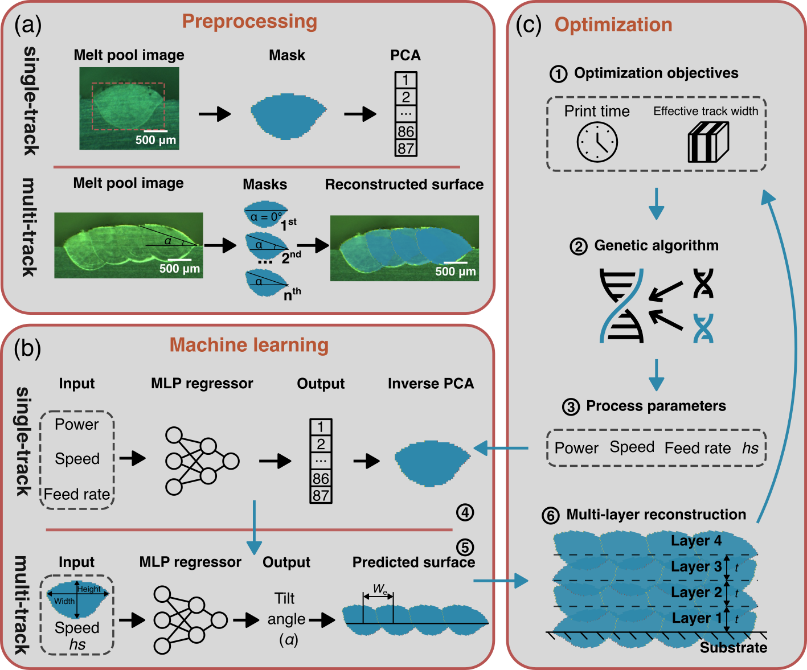
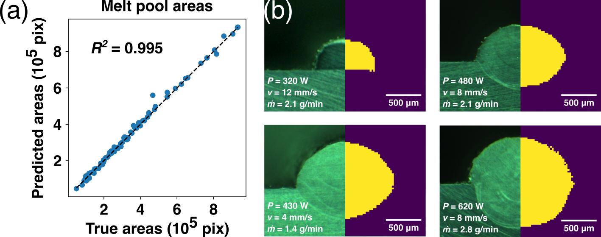
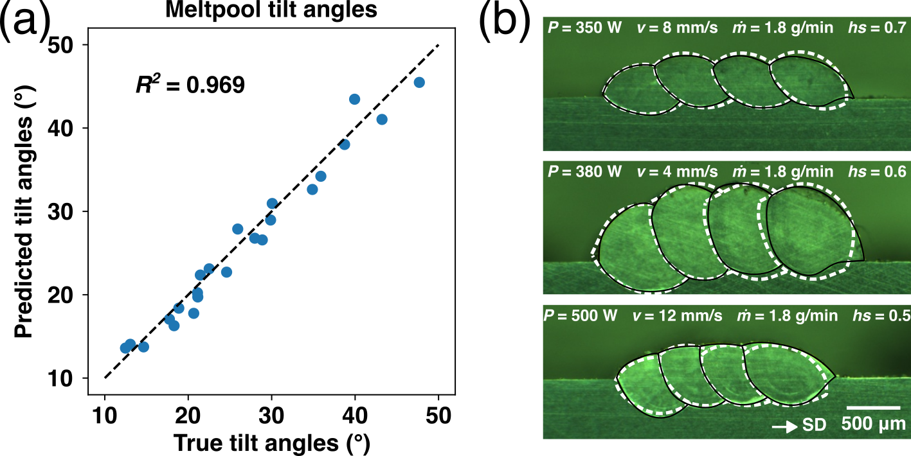
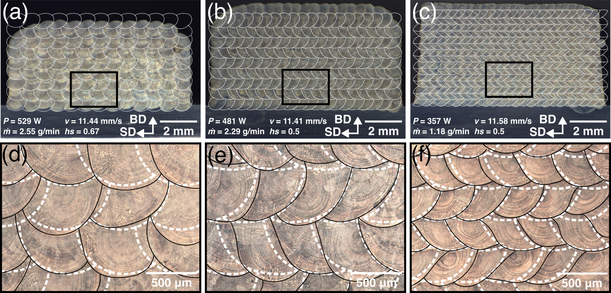

Customized directed energy deposition (DED) system and closed-loop control
Associated with LEMAM @ UofT

This full-sized DED system is equipped with a powerful 1kw IPG laser, two powder feeding hoppers, and a user-friendly interface. Materials available for printing includes 316L stainless steel, PH-17-4 stainless steel, Ni superalloys and more. It also supports in-situ monitoring with a CCD camera and a high-speed IR camera. Upgrading work is ongoing for fully autonomous closed-loop control.


AIDED - Accurate Inverse process optimization framework in laser Directed Energy Deposition
Associated with LEMAM @ UofT
Optimizing the processing parameter for DED, and in fact for AM in general is chanllenging but at the same time crucial.
Being able to fast and accurately identifying the optimal processing parameters reduces the cost, materials waste, and more
importantly, improves the build quality.
We use machine learning and computer vision methods to study the melt pool and melt track variations under various processing
parameters in order to create a framework for the esay identification of optimal processing parameters.




Please check out the published paper:
Shang, X., ..., & Zou, Y. (2025). Accurate Inverse process optimization framework in laser Directed Energy Deposition. Additive Manufacturing.
https://doi.org/10.1016/j.addma.2025.104736